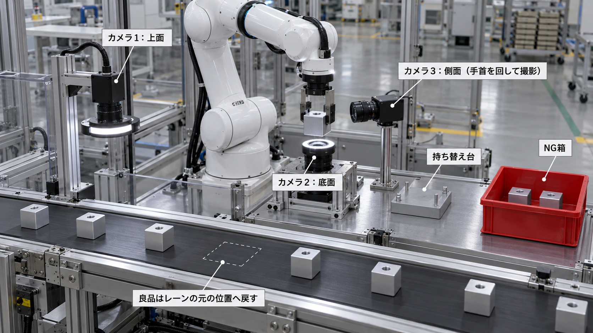
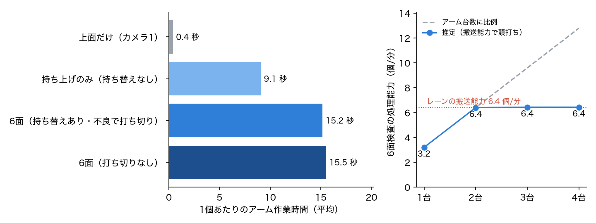

| 想定する現場 | 精密切削工場の出荷前工程。切削・洗浄を終えた部品を梱包前に全数検査する。 |
|---|---|
| 対象部品 | アルミ（A6061）削り出しのセンサーハウジング。40 mm 角、上面に取付ねじ穴 1 か所。 |
| 見つけたい不良 | 打痕・傷（搬送や治具との接触）、油ジミ（洗浄残り）、角欠け。6面のどこにでも出る。 |
| 現状の課題 | 人が1個ずつ手に取り、回しながら6面を目視している。単調で疲れやすく、裏面・側面の見落としが起きやすい。 |
| ねらい | 人が手で回して見ている動きをロボットに置き換え、全6面を毎回同じ条件で撮って AI で判定する。 |
上から撮るだけの検査は簡単に自動化できますが、底面や側面の不良は写りません。 一方、ロボットが部品をつかむと、指が触れている2面は必ず隠れます。この「つかむと見えない面ができる」問題をどう解くかが、本課題の中心です。

側面4面を4台のカメラで撮る方式も考えられます。しかし指で隠れた面は、カメラを増やしても撮れません。 持ち替えは必ず要るので、側面は1台のカメラに手首の回転で向けることにしました。処理能力が足りなければ、同じセル（アーム＋検査台）を並べて部品を分担させます。
| 方式 | 公開されている例 | 今回との関係 |
|---|---|---|
| ロボットで向きを変える（1アーム＋少数カメラ） | スカイロジック「検査員ロボット」：アームが金属製品を横の固定カメラへ向け、上面・下面カメラを加えて6面化。ヒューブレイン「多面外観検査装置」：ハンドで回転・反転し 6面＋エッジ（□5〜50 mm）。 | 今回と同じ系統。40 mm 程度の多品種部品に向く。 |
| 専用搬送＋多数カメラ | オービット「ガラミちゃん」6面タイプ：ガラス円盤上で上下2台＋側面4台。チップ部品用の6面機（最大5,000個/分）。 | 小さな部品の大量生産向けの専用機。持ち替えは不要だが品種の変更に弱い。 |
| ロボット2台で分担 | HACARUS × FANUC CRX：搬送・反転用と検査用の2台構成。県の研究ではロボット2台化で 12秒→8秒（1.5倍）。 | 共有設備が律速になると台数に比例しない。今回の試算もレーン能力で頭打ちを示した。 |
出典：各社公式ページ・発表（スカイロジック、ヒューブレイン、HACARUS 2023-06-23、オービット 2026-10-23、新潟県工業技術総合研究所 2024-08）。詳細とURLはリポジトリの research/report.md。
| 要素 | 内容 |
|---|---|
| シミュレータ | MuJoCo 3.17。シーンは Python の MjSpec で組み立て（コンベア、カメラ3台と照明、検査台、持ち替え台、NG 箱、部品8個）。 |
| ロボット | Franka Emika Panda（7軸＋2指グリッパ、MuJoCo Menagerie のモデル）。逆運動学は減衰最小二乗法＋冗長自由度で基準姿勢へ寄せる方式を自作。 |
| コンベア | 部品を一定速度（3 cm/s、ピッチ 28 cm）で運び、つかむ部品が停止位置に来たら止まる。上面カメラの通過時に撮影イベントを発生させる。 |
| 不良 | 6面のどこかに打痕・傷／油ジミ／角欠けを、位置・向き・大きさをランダムにして配置。 |
| AI（判定） | 面画像1枚を「良・打痕傷・油ジミ・角欠け」に分類する ResNet-18（ImageNet 学習済みから微調整）。1面でも不良確率が0.5を超えたら NG。 追加実験：良品の画像だけから作る異常検知（学習済み ResNet-18 の局所特徴を良品分だけ記憶し、いちばん見慣れない部分の距離で判定）。 |
| ROS 2 | ROS 2 Humble（macOS では RoboStack で導入）。ライン（シミュレーション＋ロボット）ノードが画像をトピックで送り、判定AIノードが結果を返す。関節の状態・作業の状態・部品ごとの結果も配信する。 |
10ロット×8個＝80個（うち不良30個、上面以外の面にだけ不良がある部品24個）を、同じ部品・同じ不良で次の方式に流しました。判定は学習済みの AI です。

| 方式 | 不良品の検出率 | 上面以外だけの不良 | 過検出率 | 見逃し | アーム作業時間（平均） | 処理能力（1台） |
|---|---|---|---|---|---|---|
| 上面だけ（カメラ1） | {{top_recall}} | {{top_hidden}} | {{top_frr}} | {{top_missed}}個 | {{top_cyc}} 秒 | {{top_ppm}} 個/分 |
| 持ち上げのみ（持ち替えなし） | {{nr_recall}} | {{nr_hidden}} | {{nr_frr}} | {{nr_missed}}個 | {{nr_cyc}} 秒 | {{nr_ppm}} 個/分 |
| 6面（持ち替えあり） | {{six_recall}} | {{six_hidden}} | {{six_frr}} | {{six_missed}}個 | {{six_cyc}} 秒 | {{six_ppm}} 個/分 |
| 6面（打ち切りなし） | {{all_recall}} | {{all_hidden}} | {{all_frr}} | {{all_missed}}個 | {{all_cyc}} 秒 | {{all_ppm}} 個/分 |

アームを並べた場合、2台で {{arm2}} 個/分となり、レーンの搬送能力 {{lane_max}} 個/分にほぼ達します。それ以上はレーン速度や部品ピッチの見直しが必要です。 公開例でもロボット2台化は1.5倍にとどまっており、共有設備が上限を決める点は同じです。
分類器の学習から1種類の不良を外し、テストでその不良が来たときに見つけられるかを調べました（面画像単位）。 異常検知は不良画像を一度も使っていません。
| 学習から外した不良 | 分類器だけ | 異常検知（良品だけで学習） |
|---|---|---|
| 角欠け | {{u_chip_cls}} | {{u_chip_an}} |
| 油ジミ | {{u_stain_cls}} | {{u_stain_an}} |
| 打痕・傷 | {{u_scratch_cls}} | {{u_scratch_an}} |
異常検知の誤報（良品の面を不良とする割合）は {{an_fa}}／面です。ラインに流した結果は次のとおりです（80個、うち角欠けを含む不良 {{chip_parts}}個）。
| 判定 | 不良品の検出率 | 角欠けの部品の検出率 | 過検出率 |
|---|---|---|---|
| 分類器（全種類を学習） | {{six_recall}} | {{six_chip}} | {{six_frr}} |
| 分類器（角欠けを学習していない） | {{nc_recall}} | {{nc_chip}} | {{nc_frr}} |
| 角欠けを学習していない分類器＋異常検知 | {{ncc_recall}} | {{ncc_chip}} | {{ncc_frr}} |
| 全種類を学習した分類器＋異常検知 | {{comb_recall}} | {{comb_chip}} | {{comb_frr}} |
異常検知を重ねると、未知の角欠けの見逃しは減りました。一方で、ラインで撮る画像は学習用の画像と少しずつ違う（持ち替え後の部品の傾き、照明の当たり方）ため、良品にも反応して誤NGが {{ncc_frr}} 出ました。 現場で使うなら、異常検知だけが反応した部品は NG 箱ではなく「再検査」に回す運用が合っています。本ラインの判定は分類器のみ（誤NG {{six_frr}}）としました。
課題資料のサンプル「Pick and Place Task（UR3＋2指グリッパ、ROS 2＋Gazebo）」を出発点にしました。 決まった場所の物を決まった場所へ運ぶピック＆プレースを、実際の工場の検査工程として成り立たせるために、次を加えました。
| サンプル | 本課題 |
|---|---|
| 止まった物をつかんで置く | 流れてくる部品をつかみ、動いているレーンの元の位置へ追従して戻す |
| つかむことが目的 | つかむと隠れる面を、持ち替えと手首の回転で見せる。関節の可動限界を見てつかむ向きを選ぶ |
| AI なし | カメラ3台の画像を AI（ResNet-18）が面ごとに判定。良品だけで学ぶ異常検知も追加実験として比較 |
| 動作の確認 | 検査方式と判定方法を同じ部品で比べ、見逃し率・過検出率・処理能力を数値で示す |
| ROS 2＋Gazebo | ROS 2（撮影ノードと判定AIノードを分離）＋MuJoCo（接触と把持を扱える物理シミュレータ） |
| 項目 | 内容 |
|---|---|
| 主なソフトウェア | MuJoCo、ROS 2 Humble（RoboStack）、PyTorch / torchvision（ResNet-18）、NumPy、imageio、Pillow、matplotlib |
| ロボットモデル | MuJoCo Menagerie の Franka Emika Panda（Apache-2.0）。リポジトリには含めず、スクリプトで取得。 |
| コード | MIT License。再現手順はリポジトリの README に記載。 |
| 生成AIの利用 | 構想図（図1）の作成と先行事例の調査に生成AIを使用した。コードの作成・デバッグにもAIアシスタントを使った。 |
| 動画 | デモ部分は2倍速（動画内に表示）。 |